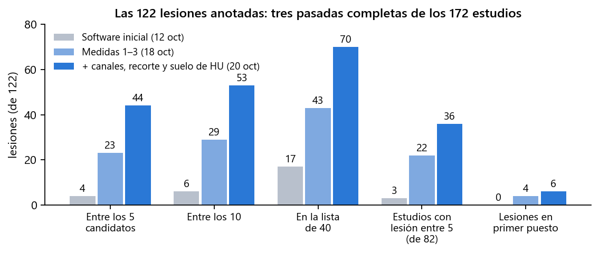
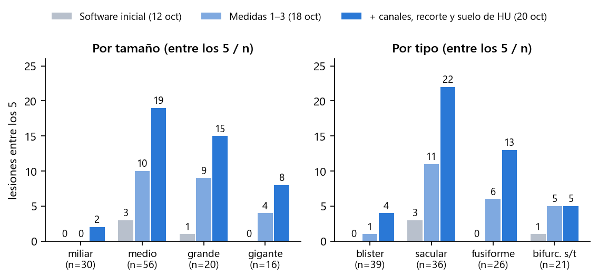
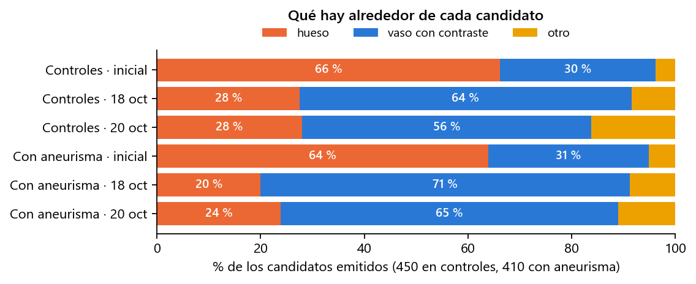
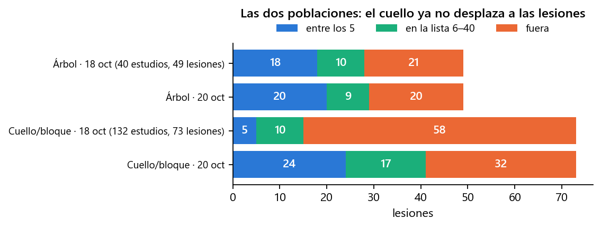
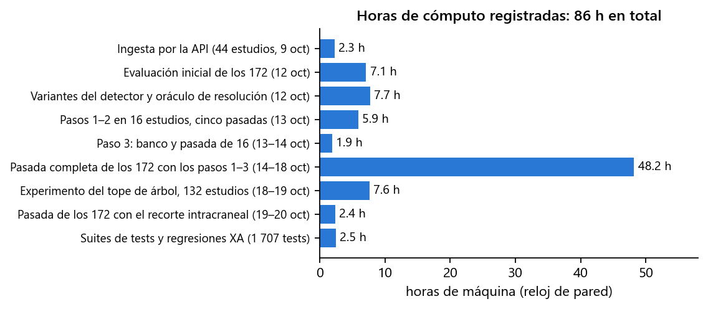

En doce días se ha incorporado el primer dataset público con verdad de terreno (172 angio-TC de cabeza con 122 aneurismas segmentados a mano), se ha medido el detector de Prospective sobre él tres veces de principio a fin y, entre pasada y pasada, se han identificado y corregido las causas del fallo una a una. Las lesiones que la aplicación coloca entre sus 5 candidatos pasan de 4 a 44; los estudios con aneurisma en los que la lesión está en la lista corta, de 3 a 36 de 82. Todo está medido sobre los 172 estudios, comprobado contra los casos de referencia de 3DRA y commiteado en el repositorio. Lo que queda está identificado y acotado.
| Fecha | Trabajo | Resultado | Estado |
|---|---|---|---|
| 8 oct | Auditoría de seguridad de la API y el acceso; búsqueda de datasets DICOM con verdad de terreno | 7 hallazgos corregidos el mismo día. Elegido Zenodo 15697196 (CC-BY): el único con DICOM + segmentación manual del aneurisma | hecho |
| 9 oct | Ingesta de 44 estudios por la API, como un usuario, y banco de medida del detector | Primer dato real: 2 aciertos de 34 aneurismas en angio-TC | hecho |
| 12 oct | Evaluación de los 172 estudios con el software tal cual, ajustes del detector y un oráculo de resolución | 4 de 122 lesiones entre los 5; tres causas medidas | hecho |
| 13 – 14 oct | Medidas 0 – 3: red de seguridad 3DRA, resolución nativa donde importa, hueso fuera de la máscara en TC, detector sobre la malla limpia | Diseñadas y medidas sobre 16 estudios; 3DRA sin cambios | hecho |
| 14 – 18 oct | Primera pasada completa de los 172 con las medidas 1 – 3 (48 h de máquina) | 23 de 122 entre los 5; dos poblaciones de estudios identificadas | hecho |
| 18 – 19 oct | Experimento: canales de grosor encendidos en los 132 estudios de cabeza y cuello (7,6 h) | Entre los 5 de 5 a 13 en esos estudios; regla cambiada. Criterio absoluto en controles: medido, no existe | hecho |
| 19 – 20 oct | Recorte a la región intracraneal antes de detectar; segunda pasada completa de los 172 (2,4 h de detección) | 44 de 122 entre los 5, 36 de 82 estudios | hecho |
| 20 oct | Suelo de densidad (un candidato en aire no es un aneurisma); diagnóstico de los sacos gigantes; limpieza de avisos | Simulado 44 → 45 entre los 5 y 6 → 8 en primer puesto sin perder ninguno; cuatro commits | hecho |
| pendiente | Comprobación de la pantalla con un estudio del dataset | Requiere entrar en la aplicación; la lógica es la misma función en la API y en el banco, cubierta por tests | pendiente |
Zenodo 15697196: 172 angio-TC de cabeza (145 de ellas incluyen el cuello), 82 con aneurisma y 90 controles, con cada aneurisma segmentado a mano en un fichero STL. Son 122 lesiones: la mitad miden 5 mm o menos, 39 son «blister» de 1,3 – 3,6 mm, 16 son gigantes, 20 están calcificadas y 22 trombosadas. Es un conjunto difícil a propósito, y es el tipo de examen (TC de cabeza entera, con el hueso tocando los vasos con contraste) para el que Prospective no se había medido nunca: su detector se había calibrado sobre dos casos de angiografía rotacional 3D (3DRA), donde no hay hueso.
Criterio de acierto, el mismo en todas las medidas: la lesión cuenta como detectada si uno de los candidatos que la aplicación enseña está a menos de 5 mm o de su diámetro. «Entre los 5» es la lista que ve el clínico; «entre los 40» es la lista larga del banco, que dice si la lesión existe para el detector aunque quede atrás.
| # | Medida | Qué hace | Qué se midió |
|---|---|---|---|
| 0 | Red de seguridad 3DRA | Regresión automática sobre los dos casos de referencia de 3DRA (lesión en el primer puesto en ambos), ejecutada tras cada cambio. | «Sin diferencias» tras cada una de las medidas siguientes, incluidas las del 20 de octubre. |
| 1 | Resolución nativa donde importa | La pasada reducida localiza el árbol vascular; después se vuelve a segmentar a la resolución del DICOM en una banda de 5 mm alrededor, por baldosas. | Lesiones fuera de la malla: de 31 a 16. Coste: 11 min de segmentación por estudio en vez de 1. |
| 2 | Hueso fuera de la máscara en TC | Lo que supera 700 HU se quita antes de rellenar, con 1,5 mm de margen. En 3DRA no se aplica. | Candidatos sobre hueso: de 560 a 206 de 860. Pieza mayor de la malla: de 760 a 196 cm³. |
| 3 | El detector sobre la malla limpia | Regla absoluta de curvatura en lugar del percentil y «la región convexa más grande primero». | Más lesiones entre los 5 y los 10 sin aumentar el hueso; seis variantes descartadas tras medirlas. |
| 4 | Canales de grosor también en cabeza y cuello | Los dos canales que miden el calibre del vaso solo corrían si la malla parecía un «árbol» pequeño; ahora corren siempre que la pieza mayor mida más de 20 mm. | En los 132 estudios de cabeza y cuello: entre los 5 de 5 a 13 de 73; hueso en controles de 112 a 79 de 415. |
| 5 | Recorte a la región intracraneal | Las 122 lesiones están a menos de 121 mm del techo de la malla; los candidatos de los controles, a 284 mm (cuello y cayado). La malla se queda con sus 140 mm altos antes de detectar. | Entre los 5 de 31 a 44 de 122; ganan 17 lesiones, pierden 4. Detección 3 veces más rápida. |
| 6 | Suelo de densidad | Ningún acierto está por debajo de −74 HU de media ni de 251 HU de máximo; 65 candidatos falsos sí (aire de los senos, grasa, partes blandas). Se quitan de la lista antes de elegir los 5. | Simulado sobre los mismos volúmenes: 44 → 45 entre los 5, 6 → 8 en primer puesto, ninguno perdido. |
Herramientas que quedan: evaluación de los 172 fuera del servidor por el mismo camino que la API (reanudable, con lista larga y traza por región), banco del detector, análisis por lesión a partir de los registros, y 105 tests nuevos. Suite del backend: 1 707 tests. Todo commiteado en cuatro commits (sin publicar todavía).

Las mismas 122 lesiones, el mismo criterio y la misma herramienta de medida en las tres pasadas; solo cambia el software. La del 20 de octubre reutiliza las mallas del 18 (solo detección), porque ninguna de las medidas 4 – 6 toca la segmentación.

Los sacos medianos, grandes y gigantes han aparecido: 19 de 56, 15 de 20 y 8 de 16. Los miliares (2 de 30) y los blister (4 de 39) siguen casi sin verse: no es un umbral, es que los canales actuales no tienen con qué verlos.

Los candidatos han dejado de apuntar al cráneo, pero no a cero: la aplicación sigue devolviendo 5 candidatos en todos los estudios, incluidos los sanos, y con el cuello fuera los rellena con lo que queda de cabeza. El criterio para decir «ninguno» se buscó el 19 de octubre y no existe con las señales actuales (sección 5).

El 18 de octubre había dos poblaciones: los estudios de cabeza sola (malla «árbol») y los de cabeza y cuello, donde el cuello y las venas competían con las lesiones en la lista. Con los canales de grosor y el recorte, los de cabeza y cuello pasan de 5 a 24 lesiones entre los 5 y ya no son la población mala.
Todo se ha ejecutado en un portátil (Intel i7-8550U de 4 núcleos, 16 GB de RAM), un solo proceso a la vez porque dos procesos de VTK simultáneos agotan la memoria. La primera pasada completa tardó 48 h de reloj repartidas en cinco días; las dos siguientes reutilizan sus mallas y volúmenes guardados (12 GB) y solo detectan: 7,6 h y 2,4 h. Las 86 h del gráfico son horas de máquina registradas en los ficheros de resultados, no horas de persona.
Coste por estudio con todas las medidas: unos 12 min de mediana (11 de segmentación y 44 s de detección, antes 2 min; hasta 47 min en los volúmenes de 1 100 cortes de cabeza y cuello). Con un servidor de 8 núcleos y 64 GB bajaría a la mitad o menos: las baldosas de la banda nativa se pueden paralelizar y el tope de memoria dejaría de reducir la resolución.

| # | Qué | Por qué y qué decide | Esfuerzo |
|---|---|---|---|
| 1 | Publicar los commits | Cuatro commits en la rama principal, por lista explícita de ficheros, sin datos de pacientes ni del dataset. El repositorio es público: el push es una decisión. | Decisión |
| 2 | Comprobación en la aplicación | Entrar, reanudar un estudio del dataset y verificar que la pantalla cuenta lo mismo que el banco (puestos, confianza, tejido). La función de detección es la misma en la API y en el banco y está cubierta por tests; falta verlo en pantalla. | Media jornada |
| 3 | Pasada completa con el suelo de densidad | La cifra de 45 es una simulación exacta sobre los mismos volúmenes y listas; una pasada de 3 h la convierte en medida y deja los registros con el detalle del suelo. | 3 h de máquina |
| 4 | Honestidad de la pantalla | Mostrar el tejido alrededor de cada candidato y el vóxel efectivo de la malla; decir que la lista siempre tiene 5 y que no hay veredicto de ausencia. | Días |
| 5 | Rendimiento | Paralelizar las baldosas de la banda nativa y revisar el tope de memoria en un servidor con más RAM: de 12 min por estudio a menos de 6. | 1 semana |
| 6 | Blister y miliares | Un canal nuevo (calibre a lo largo de la línea central, o detección sobre el volumen). Es investigación; mientras tanto, documentar que no se detectan. | Alto |
| 7 | Las 16 lesiones fuera de la malla | Dos gigantes de basilar y una calcificada (coste conocido de quitar el hueso) y 12 medianas o miliares de estudios muy reducidos; mirarlas una a una. | Días |